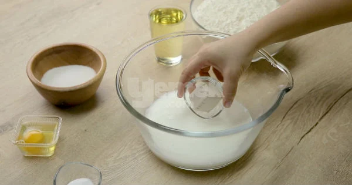
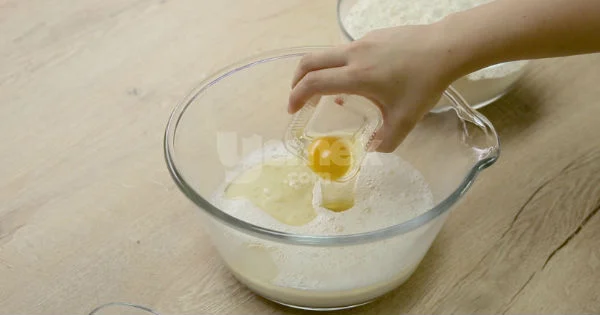
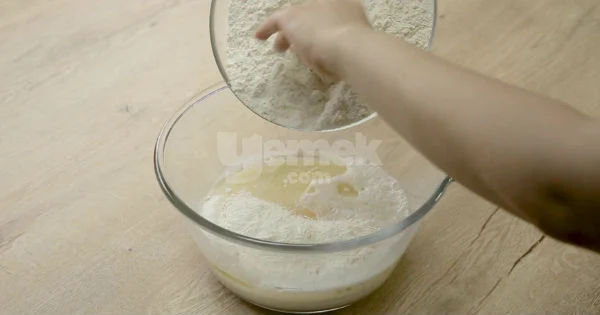
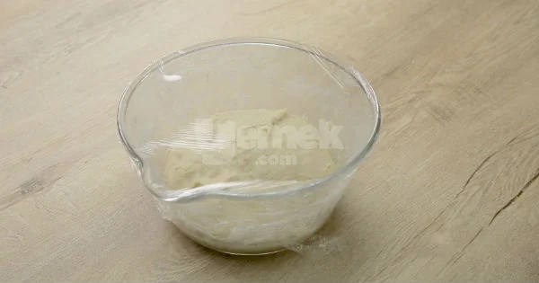
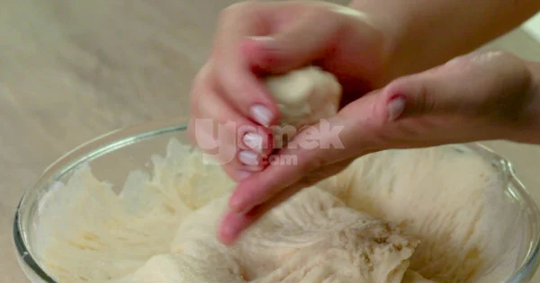
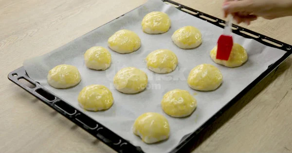
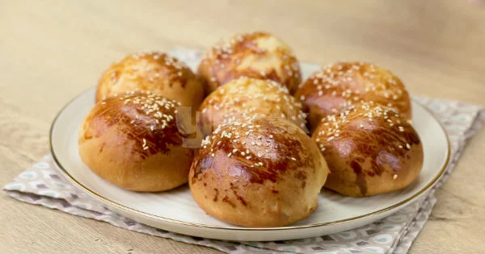

Fırından çıkmış sıcacık mayalı poğaça puf puf kabardıysa eğer insan önemsemez ki neli olduğunu...
Mis gibi bir kahvaltılık olur, peynir ve diğer tüm kahvaltılıklar yanına sonradan eklense de olur.
Kaç Kişilik:20 adet
Hazırlama Süresi:20dk
Pişirme Süresi:25dk
1 su bardağı ılık su ve 1 su bardağı ılık sütü geniş bir karıştırma kabına alın. 2 paket kuru maya ve
4 yemek kaşığı toz şekeri ekleyip karıştırdıktan sonra mayanın aktive olması için 5 dakika kadar bekletin.
Maya tamamen eridikten sonra 1 su bardağı sıvı yağ , 1 adet yumurta ve 2 çay kaşığı tuzu ekleyin.
Unu azar azar ekleyip hamuru toparlanana kadar yoğurmaya başlayın.
Yumuşak ve yapışmayacak bir kıvamda bir hamur elde ettiğiniz zaman üzerini streç
film venemli bir bezle kapatıp 40-45 dakika kadar oda ısısında mayalanmaya bırakın.
Mayalanan hamurdan yumurta büyüklüğünde parçalar kopartıp avuç içinizde yuvarlayarak şekil verin.
Tepsiye aralıklı olarak dizdiğiniz mayalı hamurların üzerine yumurta sarısı sürün.
Son mayalandırma işlemi için 10-15 dakika kadar poğaçaları tepside bekletin ve önceden ısıtılmış
190 derece fırında 20 dakika kadar pişirin. Puf puf kabarmış mayalı poğaçalar hazır, afiyet olsun!
Afiyet Olsun :)
Geri Dön